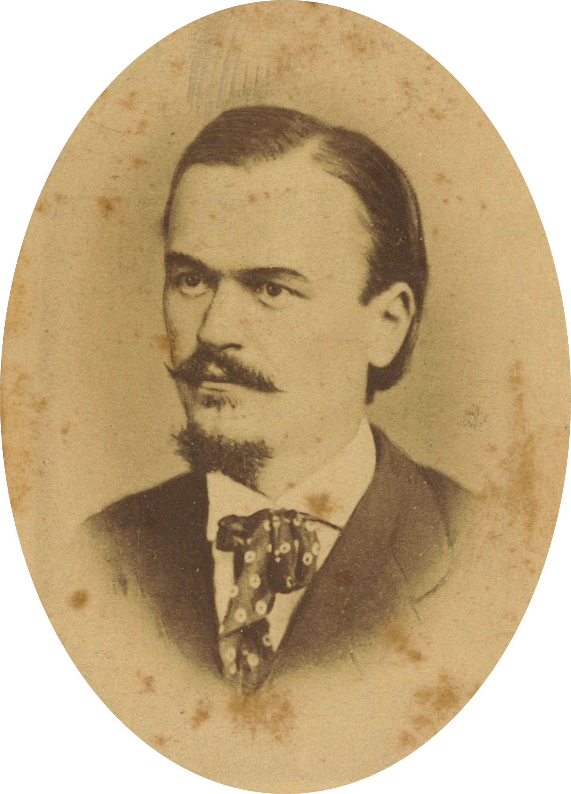
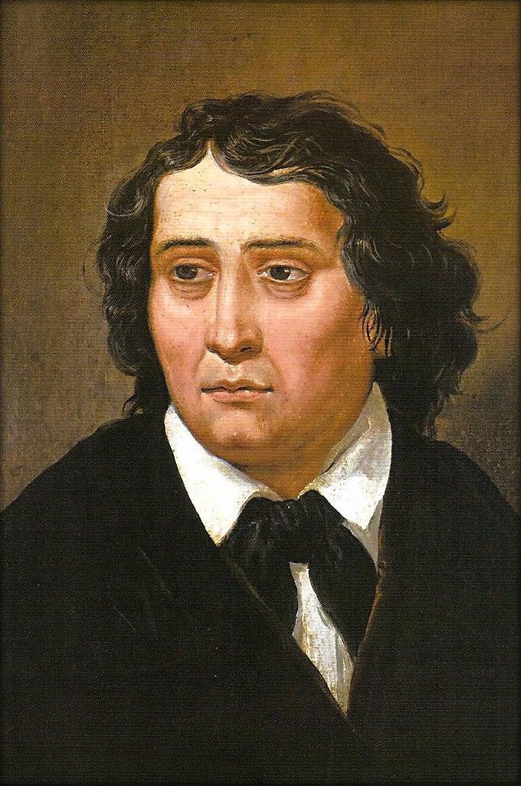

Ivan Cankar se je rodil 10. maja, leta 1876 v hiši Na klancu (Vrhnika) 141 kot osmi od dvanajstih
otrok obrtniško – proletarske družine trškega krojača. Leta 1882 se je vpisal v osnovno šolo na Vrhniki,
leta 1888 pa na ljubljansko realko. Razrednik in učitelj slovenščine mu je bil Franc Levec, ki ga je zelo
spoštoval. Tam se je pridružil dijaškemu društvu Zadruga, kjer se je predstavljal z branjem raznih pesmi in
kritik ter navezal stike z Murnom, s Kettejem in z Župančičem.
Že v dijaških letih je napisal prve pesmi in jih objavil v reviji Vrtec in reviji Ljubljanski zvon.
 Josip Jurčič se je rodil 4. marca 1844 na Muljavi kot sin revnih kmečkih staršev. Po končani osnovni šoli v Višnji Gori je obiskoval gimnazijo v Ljubljani, kjer se je seznanjal z domačo in tujo literaturo. Pri sedemnajstih letih je objavil svojo prvo pripovedko (Pripovedka o beli kači, 1861). Po končani gimnaziji je odšel na Dunaj, kjer je študiral slavistiko in klasično filologijo. Študija zaradi pomanjkanja denarja ni dokončal. Leta 1868 je z Josipom Stritarjem in Franom Levstikom izdal zbornik Mladika ter v njem objavil povest Sosedov sin. 9. avgusta 1868 je sodeloval na prvem taboru v Ljutomeru.[1] Istega leta je dobil službo pomočnika glavnega urednika pri časniku Slovenski narod v Mariboru, štiri leta kasneje pa je postal njegov glavni urednik in se preselil v Ljubljano. Tu je postal ob Franu Levstiku osrednja oseba v slovenskem političnem in kulturnem življenju. Po dveh letih zdravljenja jetike je umrl v Ljubljani.
[ več ]|  |
France Prešeren se je rodil v kmečki družini. V osnovni šoli je bil tako priden, da so ga zapisali v zlato knjigo. Po uspešno zaključenem študiju na dunajski pravni fakulteti se je vrnil v Ljubljano, kjer je delal kot odvetnik. V tem času je napisal večino svojih pesmi, pri pisanju katerih ga je pomembno usmerjal prijatelj Matija Čop. Prešeren je prvi Slovenec, ki se je po kakovosti svojega pisanja lahko kosal s sodobniki po Evropi, kjer je tedaj vladala romantična usmeritev. Življenjska pot pesnika, nesrečno zaljubljenega v bogato Primičevo Julijo, ki ji je posvetil Sonetni venec (1834) in nekatere druge ljubezenske pesmi, je bila polna raznovrstnih preizkušenj. Njegovi prijatelji so umirali eden za drugim, kot pesnik pa v času svojega življenja ni bil priznan. V zadnjih letih življenja se je vse bolj soočal z malodušjem, težavami z alkoholom, ki je nazadnje povzročil njegovo smrt. France Prešeren danes velja za največjega slovenskega pesnika. Del njegove pesmi Zdravljica, napisane leta 1844, je besedilo državne himne Republike Slovenije, obletnica njegove smrti pa osrednji državni kulturni praznik. V manjšem obsegu obeležujemo tudi obletnico njegovega rojstva kot Ta veseli dan kulture. |
| [ več ] |